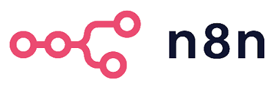
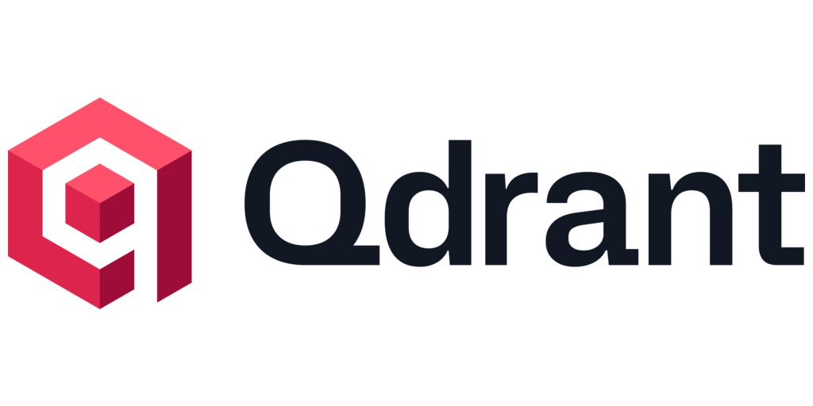
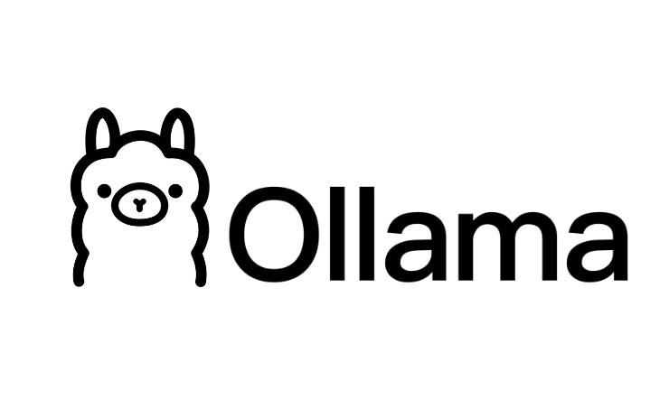

El problema nació antes que el TFG
Durante mi etapa en una e-commerce trabajamos con Tidio, un plugin de atención al cliente de pago integrado en WordPress.
El problema era triple: cuota mensual elevada, configuración costosa que no siempre funcionaba, y un límite de chats al mes que en temporada alta dejaba al equipo sin cobertura. Se acababa contestando manualmente de todas formas.
De ahí surgió la pregunta que da origen a este proyecto.

n8n
Qdrant
OllamaLos tres problemas de Tidio
El IES Venancio Blanco es el caso de uso elegido para validar la solución. La arquitectura es independiente del dominio: el mismo sistema es aplicable a ayuntamientos, empresas o cualquier organización con información repetitiva que gestionar.
Por qué RAG y no otra aproximación
Corpus del sistema
Las cinco fuentes fueron obtenidas mediante scraping con Python y BeautifulSoup. Los documentos se dividen en chunks con solapamiento de 150 caracteres, se vectorizan con nomic-embed-text y se almacenan en Qdrant con metadatos de origen y tipo.
Cada decisión, justificada
- Sin coste por ejecución, sin límite de llamadas, self-hosteable
- Cambiar el modelo de lenguaje equivale a modificar una credencial
- Pipeline visual — inspeccionable durante la demo
- LangChain / LlamaIndex: mayor coste de mantenimiento como frameworks de código
- Diseñado desde cero para vectores (Rust, algoritmo HNSW)
- Filtrado por metadatos nativo — imprescindible para la lógica del pipeline
- Elasticsearch añadió vectores en v8.0, pero no fue diseñado para ello
- ChromaDB: menos maduro para entornos de producción
- Comparativa en Fase 1 sobre el mismo corpus: llama3.2, llama3.1 y qwen2.5:7b
- Mejor equilibrio calidad / rendimiento en CPU sin GPU dedicada
- llama3.1: más pesado sin mejora proporcional en este dominio
- qwen2.5:7b: menor precisión en español para dominio educativo
- Async nativo: no bloquea el hilo durante la espera al modelo
- Validación automática con Pydantic — sin código de validación manual
- Documentación interactiva generada automáticamente en
/docs
Evolución arquitectónica
Fase 1 — Pipeline en FastAPI
Vectorización, búsqueda en Qdrant y llamada al modelo en Python manual. Permitió validar la arquitectura RAG sobre el corpus real. Cualquier modificación del pipeline requería intervención en el código.
Fase 2 — Orquestación con n8n
FastAPI queda como capa ligera que delega al webhook de n8n. El pipeline es visual, la memoria de sesión se añadió configurando un nodo, y cambiar el modelo de lenguaje es modificar una credencial.
Infraestructura
7 contenedores en Docker Compose: frontend (Vue 3 + nginx), backend (FastAPI), n8n, ollama, qdrant, panel de administración (Laravel + PHP 8.4) y postgres interno de n8n. Red interna Docker — despliegue completo con un único comando.
Coste cero por consulta — con matices
La ausencia de API externa elimina la tarificación por uso. El coste real del sistema se estructura en tres dimensiones.
Hardware
GPU dedicada imprescindible para producción. Si el cliente dispone de sobremesa con ranura PCIe libre, basta con adquirir una GPU de segunda mano (180–280€). Si no dispone de equipo apto, se añade un sobremesa de segunda mano (80–150€ adicionales).
Implantación
Precio por proyecto, no por hora. Varía según el estado de la documentación del cliente: si está organizada y disponible, la ingesta es directa. Si hay que obtenerla mediante scraping, el trabajo previo es mayor.
Mantenimiento
Revisión y actualización del corpus una vez por curso académico. Con el panel de administración, el propio personal del centro puede gestionar actualizaciones ordinarias sin intervención técnica.
Escenarios llave en mano
| Escenario | Sin scraping * | Con scraping | Año 2+ |
|---|---|---|---|
| A — Hardware propio del cliente | 430–530€ | 530–630€ | 100–200€ |
| B — Hardware de segunda mano | 510–680€ | 610–780€ | 100–200€ |
| C — SaaS ** | 250€ + cuota | 350€ + cuota | 460–920€ + cuota |
* El cliente entrega la documentación organizada en formato digital.
** El modelo SaaS implica que los datos del cliente pasan por infraestructura propia. Requiere medidas adicionales de cumplimiento RGPD — coste variable según los requisitos del cliente. A partir del segundo año, resulta más costoso que el modelo on-premise.
El corpus es sustituible por dominio — misma arquitectura para centros educativos, ayuntamientos o empresas. El modelo on-premise es especialmente adecuado para instituciones públicas con requisitos estrictos de privacidad y presupuesto ajustado.
Identificadas, documentadas y con solución diseñada
Líneas de mejora
Un proyecto de investigación aplicada, no un ejercicio de fin de ciclo.
Elena González Plaza · DAM 2025/2026 · IES Venancio Blanco
Proyección del sistema
Lo que este proyecto demuestra
Que la IA generativa local es arquitectónicamente viable sin depender de servicios externos ni incurrir en costes por uso. El escenario de pruebas ha sido deliberadamente restrictivo — CPU sin GPU — para demostrar que la base funciona incluso en las condiciones más limitadas.
El paso siguiente
Con GPU dedicada y un despliegue on-premise adecuado, la latencia pasa de más de un minuto a 1–3 segundos. La arquitectura no cambia — solo el hardware. Ese es el salto de prototipo a producto, y está completamente al alcance del modelo de negocio presentado.
Aplicación de lo aprendido
Este proyecto integra y amplía conocimientos del ciclo DAM y de las prácticas en Lobera Engineering: arquitectura hexagonal, patrones de diseño, despliegue con Docker, desarrollo frontend con Vue 3, y seguridad y privacidad por diseño. Un escenario real de investigación, desarrollo y toma de decisiones técnicas.